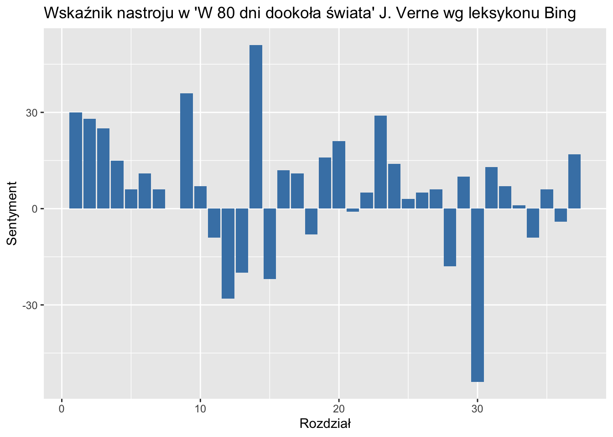
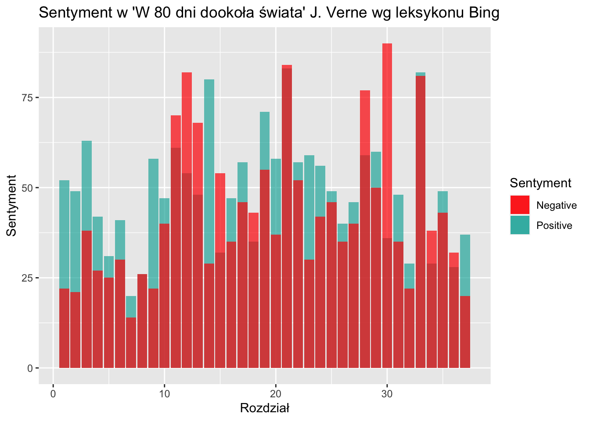
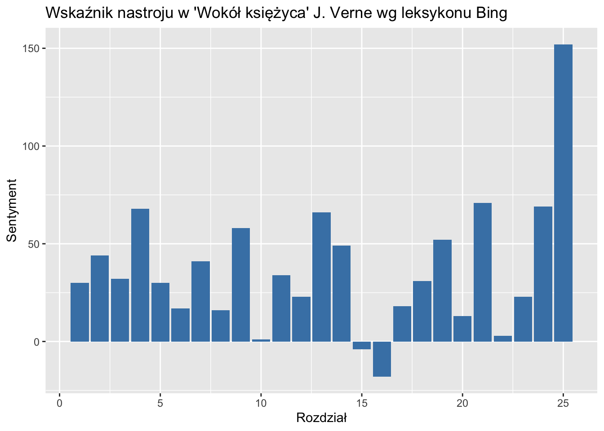
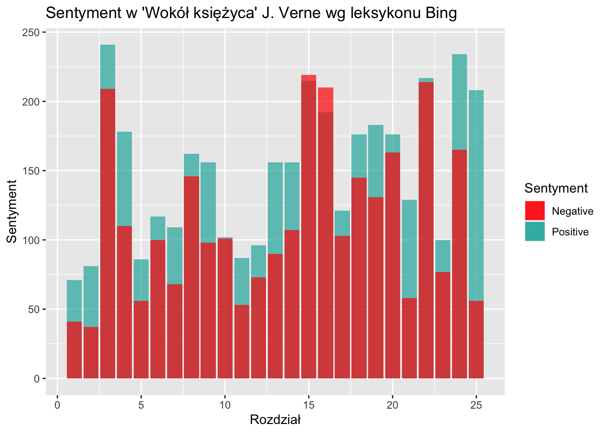
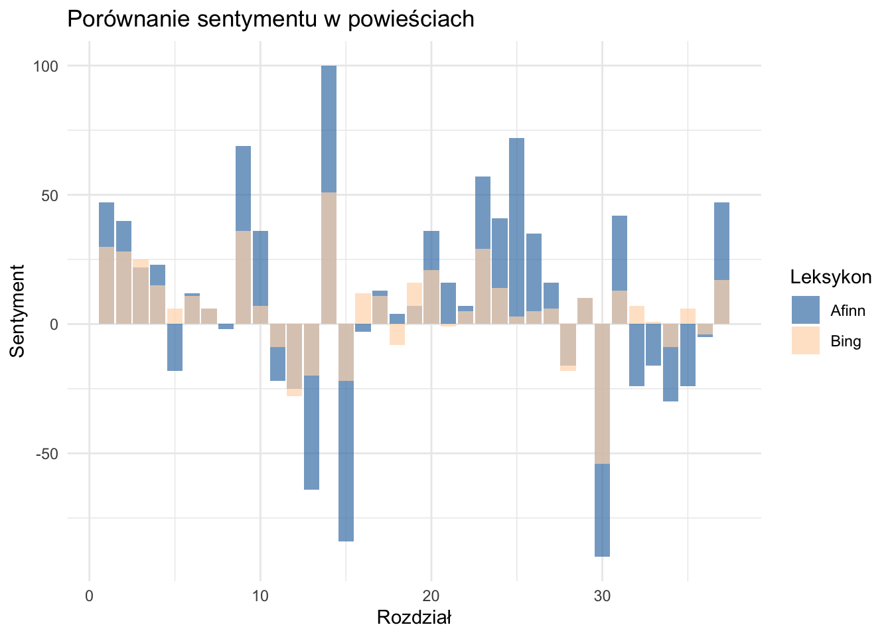
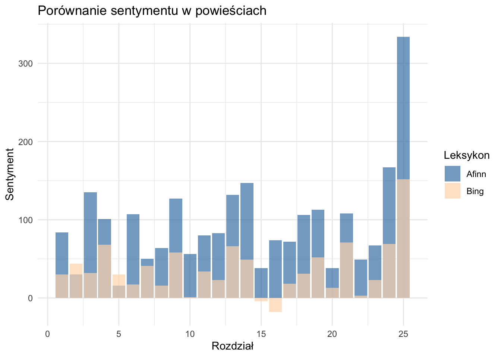
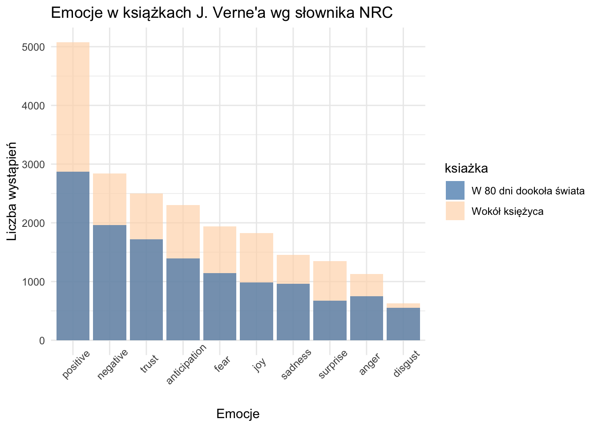

Słownik Bing to zbiór słów kluczowych z przypisanymi wartościami sentymentalnymi:
pozytywnymi,
negatywnymi,
neutralnymi.
W analizie sentymentu według słownika Bing, tekst jest przetwarzany pod kątem występowania tych słów, co pozwala na określenie ogólnego nastroju lub emocji wyrażanych w tekście. Dzięki temu narzędziu można ocenić, czy tekst ma pozytywny, negatywny czy neutralny charakter.
bing_sentiments <- get_sentiments("bing")
eighty_days_sentiments_bing =
inner_join(eighty_days_tokens, bing_sentiments, by = "word")
all_moon_sentiments_bing =
inner_join(all_moon_tokens, bing_sentiments, by = "word")eighty_days_bing <- eighty_days_tokens %>%
inner_join(bing_sentiments, by = "word") %>%
count(chapter, sentiment) %>%
spread(sentiment, n, fill = 0) %>%
mutate(sentiment = positive - negative)
ggplot(eighty_days_bing, aes(x = chapter, y = sentiment)) +
geom_bar(stat = "identity", show.legend = FALSE, fill = "steelblue") +
labs(title = "Wskaźnik nastroju w 'W 80 dni dookoła świata' J. Verne wg leksykonu Bing",
x = "Rozdział",
y = "Sentyment")
Z wskaźnik nastroju (pozytywne-negatywne emocje) w książce ‘W 80 dni dookoła świata’ można wyciągnąć kilka wniosków:
w początkowych rozdziałach (1-10) dominuje pozytywny sentyment, co sugeruje początkową beztroskę i optymizm w narracji.
następnie, w rozdziałach 11-15, pojawia się wyraźny spadek nastroju, gdzie negatywny sentyment staje się bardziej widoczny, jednka w rozdziale 14 mamy nagly wzrost nastroju, największy dla całej książki. To może wskazywać na rozwijającą się intrygę lub pojawienie się trudności dla bohaterów,
w kolejnych rozdziałach (16-20) obserwuje się pewne zrównoważenie między pozytywnym a negatywnym sentymentem, co sugeruje pewien stabilny przebieg wydarzeń,
jednak w późniejszych rozdziałach (21-37) znowu pojawia się częsty spadek nastroju, gdzie negatywny sentyment przeważa. To może oznaczać kluczowe momenty konfliktu lub trudności, które bohaterowie muszą pokonać,
książka kończy się pozytywnym nastrojem, lecz niezbyt wysokim.
ggplot(eighty_days_bing, aes(x = chapter)) +
geom_bar(aes(y = positive, fill = "Positive"), stat = "identity", alpha = 0.7) +
geom_bar(aes(y = negative, fill = "Negative"), stat = "identity", alpha = 0.7) +
labs(title = "Sentyment w 'W 80 dni dookoła świata' J. Verne wg leksykonu Bing",
x = "Rozdział",
y = "Sentyment",
fill = "Sentyment") +
scale_fill_manual(values = c("Positive" = "lightseagreen", "Negative" = "red")) +
guides(fill = guide_legend(title = "Sentyment"))
W celu głębszej analizy przedstawiono również wykres, na którym można porównać ilość pozytywnych i negatywnych emocji. Na jego podstawie wyciągnięto dodatkowe wnisoki:
można powiedzieć że w książce “w 80 dnii dookoła świata” przeważają pozytywne emocje,
ilość negaywtnych emocji przeważa na przełomie 1/3 książki (rozdziały 11-13) oraz w pojedyńczych rozdziałach w drugiej połowie - rozdziały 21, 28, 30 i 34,
Najbardziej emocjonalne rozdziały, w których jednocześnie ciężko jednoznacznie roztrzygnąć o emocjach również znajdują się w drugiej połowie książki, są to 21 oraz 33,
przewagę pozytywnych emocjii nad negatywynymi można jednoznczanie zauważyć na początku ksiązki, na jej końcu obserwuje się zauważalny spadek pozytywności.
Analiza sentymentu według słownika Bing w książce “W 80 dni dookoła świata” pozwala zauważyć, że nastroje w narracji są zróżnicowane. Na początku dominuje pozytywny sentyment, co odzwierciedla beztroską atmosferę i optymizm. Jednak w środkowych rozdziałach występuje wyraźny spadek nastroju, zaznaczający się większą ilością negatywnych emocji. W pewnym momencie następuje jednak nagły wzrost nastroju, najwyższy w całej książce. W drugiej połowie książki negatywny sentyment jest zauważalny ale neutralizowany przez pozytwyny, co może wskazywać na kluczowe momenty konfliktu i trudności. Mimo to, książka kończy się z umiarkowanie pozytywnym nastrojem. Ogólnie rzecz biorąc, analiza danych sentymentalnych wskazuje na dynamiczną naturę fabuły, z różnymi emocjonalnymi momentami.
------------------------------------------------------------------------------------------
all_moons_bing <- all_moon_tokens %>%
inner_join(bing_sentiments, by = "word") %>%
count(chapter, sentiment) %>%
spread(sentiment, n, fill = 0) %>%
mutate(sentiment = positive - negative)
ggplot(all_moons_bing, aes(x = chapter, y = sentiment)) +
geom_bar(stat = "identity", show.legend = FALSE, fill = "steelblue") +
labs(title = "Wskaźnik nastroju w 'Wokół księżyca' J. Verne wg leksykonu Bing",
x = "Rozdział",
y = "Sentyment")
Na podstawie wykresu przedstawiającego wskaźnik nastroju w powieści ‘Wokół księżyca’ można powiedzieć:
ggplot(all_moons_bing, aes(x = chapter)) +
geom_bar(aes(y = positive, fill = "Positive"), stat = "identity", alpha = 0.7) +
geom_bar(aes(y = negative, fill = "Negative"), stat = "identity", alpha = 0.7) +
labs(title = "Sentyment w 'Wokół księżyca' J. Verne wg leksykonu Bing",
x = "Rozdział",
y = "Sentyment",
fill = "Sentyment") +
scale_fill_manual(values = c("Positive" = "lightseagreen", "Negative" = "red")) +
guides(fill = guide_legend(title = "Sentyment"))
W celu głębszej analizy przedstawiono również wykres, na którym pozytywne i negatywne sentymenty są rozdzielone. Na jego podstawie wyciągnięto dodatkowe wnioski:
rozdział 3 ma najwyższy pozytywny i negatywny sentyment, co sugeruje obecność zarówno negatywnych, jak i pozytywnych wydarzeń lub emocji w tym rozdziale. Może to wskazywać na złożoność fabuły lub konflikty,
ogólny wysoki pozytywny sentyment w rozdziale 3 zauważony na poprzednim wykresie składa się z bardzo wysokiego zarówno pozytywnego jak i negatywnego sentymentu. Może to wskazywać na złożoność fabuły i emocjonalny czas.
podobnie rozdziały 15 i 16 charakteryzują się jednocześnie wysokim wskaźnikiem pozytywności jak i negatywności, z przewagą tego drugiego, stąd sumarycznie negatywny wydźwięk zauważony na poprzednim wykresie. Tu również czytelnik może odczuć emocjonalny czas dla bohaterów,
na początku i na końcu książki obserwuje się niski wskaźnik negatywnego sentymentu (abstrahując od pozytywnego), a wraz z fabuła ogólnie rośnie wskaźnik pozytynego sentymentu.
najwyższy pozytywny sentyment (abstrahując od negatywnego) występuje w rozdziale 3 i dwóch ostatnich: 24 i 25.
Na podstawie analizy sentymentu według słownika Bing w książce “Wokół księżyca” można powiedzieć, że cała książka jest generalnie nacechowana pozytywnym sentymentem, co sugeruje, że optymizm i dobre emocje towarzyszą czytelnikowi przez całą fabułę. Rozdziały 15 i 16 wyróżniają się negatywnym sentymentem, stanowiąc kontrast w stosunku do reszty rozdziałów. Może to wskazywać na wystąpienie momentów konfliktu lub trudności, które dodają napięcia i zmieniają ton narracji. Ponadto wspomniane rozdziały wraz z 3 cechują się wysokim poziomem zarówno pozytywnego, jak i negatywnego sentymentu, co może wskazywać na intensywne emocje i dynamikę. Ostatni rozdział osiąga najwyższy wynik wskaźnika sentymentu, co sugeruje zdecydowany happy end.
------------------------------------------------------------------------------------------
Porównując dwie analizy sentymentu w książkach “W 80 dni dookoła świata” i “Wokół księżyca”, można zauważyć pewne podobieństwa i różnice. W obu przypadkach analiza sentymentu wykazuje zróżnicowane nastroje w narracji, jednak w przypadku “Wokół księżyca” jest to dużo mniejsza dynamika niż w “W 80 dni dookoła świata”. Obie książki rzopocznają się pozytywnie i kończą happy endem. Sugerując czytelnikom, można powiedzieć, że “W 80 dni dookoła świata” oferuje dynamiczną fabułę z różnymi emocjonalnymi momentami, podczas gdy “Wokół księżyca” zapewnia optymizm i dobre emocje przez większość historii. Oba tytuły mogą być interesujące dla osób poszukujących różnorodności nastrojów i emocji w literaturze.
------------------------------------------------------------------------------------------
Słownik AFINN (Affinity Lexicon) to słownik, który przypisuje wartości sentymentalne słowom w tekście. Słowa są oceniane liczbowo na skali od -5 do +5, gdzie wartości ujemne oznaczają negatywny sentyment, a wartości dodatnie oznaczają pozytywny sentyment.
Słownik AFINN zawiera mniejw wyrazów niż Bing, skupia się na słowach mających wyraźny wydźwięk sentymentalny, a jego głównym celem jest identyfikowanie i mierzenie emocjonalnej zawartości tekstu. Je
afinn_sentiments <- get_sentiments("afinn")
eighty_days_sentiments_afinn =
inner_join(eighty_days_tokens, afinn_sentiments, by = "word")
all_moon_sentiments_affin =
inner_join(all_moon_tokens, afinn_sentiments, by = "word")Jako że rezultat zastosowania słownika Affin jest bardzo podobny do wykresów wykonanych za pomocą słownika Bing, poniższa analiza jest w formie porównawczej aby nie powielać wniosków.
eighty_days_afinn <- eighty_days_sentiments_afinn %>%
group_by(chapter) %>%
summarise(value = sum(value))
eighty_days_bing_comparison <- eighty_days_bing %>%
rename(value = sentiment)
combined_sentiments <- rbind(
transform(eighty_days_afinn, lexicon = "Afinn"),
transform(eighty_days_bing_comparison[c(1,4)], lexicon = "Bing")
)
ggplot(combined_sentiments, aes(x = chapter, y = value, fill = lexicon)) +
geom_col(position = "identity", alpha = 0.7) +
labs(title = "Porównanie sentymentu w powieściach",
x = "Rozdział",
y = "Sentyment",
fill = "Leksykon") +
scale_fill_manual(values = c("Afinn" = "steelblue", "Bing" = "peachpuff")) +
theme_minimal()
Porównując sentyment według dwóch słowników, Affin i Bing, w książce “80 dni dookoła świata”, można zauważyć pewne różnice w interpretacji nastroju:
pierwsze rozdziały są bardziej pozytywne w przypadku Affin, z odwróceniem sentymentu w rozdziale 5. Może sugerować to trudności na drodze bohaterów, nie wykryte przez słownik Bing,
środek książki (rozdziały 17-27) jest znacząco bardziej pozytywny niż sugerował to Bing,
na końcu książki za pomocą słownika Affin w odróżnieniu do Bing można zauważyć przewagę negatywności (rozdziały 32-36) z happy endem (pozytywność na poziomie początku książki),
wiele sentymentów zostało odwróconych według Affin, sugerując inną dynamikę
do negatywnych rozdziałów należą: 5 (Bing: pozytywny), 8 (Bing: neutralny),16 (Bing: pozytywny), 32-33, 35 (Bing: pozytywny),
a do pozytywnych: 18 (Bing: negaytwyny), 21 (Bing: neutralny)
według obu słowników najbardziej pozytywnym rozdziałem jest 14. Podobnie w przypadku negatywnego, oba słowniki są zgodne co do rozdziału 30, jednakże affin sugeruje, że podobnie negatywny wydźwięk ma rozdział 15. To może być najbardziej emocjonalny moment książki, gdyż po dużym pozytywiźmie następuje duży negatywizm. Bohaterzy mogli przykładowo doświadzczyć tutaj straty.
Słownik Affin wydaje się bardziej skłonny do wykrywania pozytywnych sentymentów niż Bing w książce “80 dni dookoła świata”. Ogólnie rzecz biorąc, sentymenty według Affin są wyższe niż według Bing. Istnieją również różnice interpretacji nastroju w poszczególnych rozdziałach, gdzie Affin często odwraca sentymenty w porównaniu do Bing.
------------------------------------------------------------------------------------------
all_moon_afinn <- all_moon_sentiments_affin %>%
group_by(chapter) %>%
summarise(value = sum(value))
all_moon_bing_comparison <- all_moons_bing %>%
rename(value = sentiment)
combined_sentiments <- rbind(
transform(all_moon_afinn, lexicon = "Afinn"),
transform(all_moon_bing_comparison[c(1,4)], lexicon = "Bing")
)
ggplot(combined_sentiments, aes(x = chapter, y = value, fill = lexicon)) +
geom_col(position = "identity", alpha = 0.7) +
labs(title = "Porównanie sentymentu w powieściach",
x = "Rozdział",
y = "Sentyment",
fill = "Leksykon") +
scale_fill_manual(values = c("Afinn" = "steelblue", "Bing" = "peachpuff")) +
theme_minimal()
Porównując sentyment według dwóch słowników, Affin i Bing, w książce “Wokół księżyca”, można wyciągnąc wnioski:
słownik Affin wykrywa wyższe sentymenty niż Bing w trakcie całej książki, poza rozdziałami 2 i 5,
według Affin żaden rozdział nie jest zaklafikowany jako negatywny, Bing wymienił 15 i 16,
ponadto rozdziałami o najniższym sentymencie są teraz 2 i 5, co może sugerować mniejszy optymizm na początku przygody lub większe problemy. Ogólnie rzecz biorąc początek książki według Affin jest bardziej dynamiczny jeżeli chodzi o sentyment niż według Bing,
koniec książki bardziej wyróżnia się pozytywnym zakończeniem aniżeli w przypadku słownika Bing.
Podsumowując, analiza sentymentu za pomocą słowników Affin i Bing w książce “Wokół księżyca” ukazuje różnice w interpretacji nastroju, ze szczególnym uwzględnieniem pozytywnych aspektów. Słownik Affin wykazuje tendencję do wykrywania większej liczby pozytywnych sentymentów niż Bing, co wpływa na ogólny odbiór emocjonalny książki.
eight <- (abs((eighty_days_afinn[2] - eighty_days_bing_comparison[4])))
eight <- as.list(eight)[[1]]
moon <- (abs((all_moon_afinn[2] - all_moon_bing_comparison[4])))
moon <- as.list(moon)[[1]]
mean_eight = mean(eight)
max_eight = max(eight)
mean_moon = mean(moon)
max_moon = max(moon)
max_eight_chapter <- which.max(eight)
max_moon_chapter <- which.max(moon)
same_sentiment_eight <- (sum(eighty_days_afinn[2] - eighty_days_bing_comparison[4] == 0))/ length(eight) * 100
same_sentiment_eight_chapters <- which(eighty_days_afinn[2] - eighty_days_bing_comparison[4] == 0)
same_sentiment_moon <- (sum(all_moon_afinn[2] - all_moon_bing_comparison[4] == 0))/ length(moon) * 100
positive_negative_count_eighty <- sum(sign(eighty_days_afinn[2]) == sign(eighty_days_bing_comparison[4]) * -1)
positive_negative_count_moon <- sum(sign(all_moon_afinn[2]) == sign(all_moon_bing_comparison[4]) * -1)
percent_eighty <- positive_negative_count_eighty/length(eight) * 100
percent_moon <- positive_negative_count_moon/length(moon) * 100
cat("Różnica w sentymentach w 'W 80 dni dookoła świata': \n",
"Średnia:", mean_eight, "\n Maksymalna:", max_eight, "\n Dla rozdziału:", max_eight_chapter, "\n Procent niezmienności:", sprintf("%.3f%%", same_sentiment_eight), "\n Dla rozdziałów:", same_sentiment_eight_chapters, "\n Zmiana pozytywne/negatywne:", positive_negative_count_eighty, "\n Procentowa zmiana pozytywne/negatywne:", sprintf("%.3f%%", percent_eighty), "\n \n",
"Różnica w sentymentach w 'Wokół księżyca': \n",
"Średnia:", mean_moon, "\n Maksymalna:", max_moon, "\n Dla rozdziału:", max_moon_chapter, "\n Procent niezmienności:", sprintf("%.3f%%", same_sentiment_moon), "\n Zmiana pozytywne/negatywne:", positive_negative_count_moon, "\n Procentowa zmiana pozytywne/negatywne:", sprintf("%.3f%%", percent_moon), "\n")## Różnica w sentymentach w 'W 80 dni dookoła świata':
## Średnia: 19.81081
## Maksymalna: 69
## Dla rozdziału: 25
## Procent niezmienności: 5.405%
## Dla rozdziałów: 7 29
## Zmiana pozytywne/negatywne: 7
## Procentowa zmiana pozytywne/negatywne: 18.919%
##
## Różnica w sentymentach w 'Wokół księżyca':
## Średnia: 60.6
## Maksymalna: 182
## Dla rozdziału: 25
## Procent niezmienności: 0.000%
## Zmiana pozytywne/negatywne: 2
## Procentowa zmiana pozytywne/negatywne: 8.000%W celu dodatkowego porównania analizy wedlug słownika Bing i Afinn zostały przedstawione powyższe statystyki. Na podstawie średniej różnicy w sentymentach (wartość bezwględna) możemy zauważyć, że analiza dla powieści “Wokół księżyca” jest bardziej zróżnicowana pod względem sentymentu, a największa różnica w wartości wynosi 182 dla ostatniego rozdziału. Jednakże należy mieć na uwadzę na podstawie poprzednich analiz, że słownik Affin dla tej powieści ustanowił pozytywny sentyment dla każdego rozdziału, ponadto prawie wszystkie rozdziały (poza dwoma) ocenił na pozytywniejsze niż Bing. Średnia różnica sentymentu w “W 80 dni dookoła świata” natomiast jest dużo mniejsza, ponieważ wynosi 19.81, przy maksymalnej różnicy 69 dla rozdziału 25, co sugeruje większą zgodność podejść słowników, jednakże na poprzednich wykresach zauważona została większa różnorodność - zamiana sentymentu dla konkretnych rozdziałów.
Dodatkowo procent niezmienności dla pierwszej książki wskazuje 5,4% przypadków (rozdziałów), dla których sentyment według obu słowników jest identyczny. Dla porównania z analizy wynika, że dla drugiej książki nie ma rozdziałów, w których sentymenty według obu słowników są identyczne, co również można już było zaobserować na wykresach.
Analiza wykazuje najwięcej zmian kategorii sentymentu w rozdziałach dla pierwszej powieści, dotyczy aż 7, co stanowi 19.9% wszystkich rozdziałów. W przypadku drugiej książki mowa o zaledwie 2 rozdziałach, które stanowią 8% wszystkich dla tej powieści.
Podsumowując, z podanych statystyk wynika, że dwa podejścia różniły się mniej w przypadku pierwszej książki, a więcej w przypadku drugiej. Co może oznaczać większą pewność intepretacji dla “W 80 dni dookoła świata”. Jednak biorąc pod uwagę procentową zmianę kategorii sentymentu oraz całą analizę, można powiedzieć, że w przypadku powieści “Wokół księzyca” analiza i intepretacja sentymentu jest bardziej jednoznaczna jeżeli chodzi o ‘kierunek’ - najczęstsze zmiany dotyczyły podwyższenia sentymentu za pomocą słownika Affin, który już był pozytywny w przypadku Bing.
------------------------------------------------------------------------------------------
Słownik NRC (National Research Council) to słownik, który zawiera kategorie emocji, a nie tylko wartości sentymentalne słów. Zamiast przypisywać wartości liczbowe, słownik NRC identyfikuje obecność lub brak pewnych emocji w tekście. Słowa są przyporządkowane do różnych kategorii emocji, takich jak radość, smutek, gniew, strach, zaufanie itp. Słownik NRC pozwala na bardziej szczegółową analizę emocji obecnych w tekście, a nie tylko ogólną ocenę sentymentu.
nrc_sentiments <- get_sentiments("nrc")
eighty_days_sentiments_nrc =
inner_join(eighty_days_tokens, nrc_sentiments, by = "word")
all_moon_sentiments_nrc =
inner_join(all_moon_tokens, nrc_sentiments, by = "word")combined_sentiments_nrc <- rbind(
mutate(all_moon_sentiments_nrc, ksiażka = "Wokół księżyca"),
mutate(eighty_days_sentiments_nrc, ksiażka = "W 80 dni dookoła świata")
)
emotion_counts <- combined_sentiments_nrc %>%
group_by(ksiażka, sentiment) %>%
summarise(total = n()) %>%
ungroup() %>%
arrange(sentiment, desc(total))
ggplot(emotion_counts, aes(x = reorder(sentiment, -total), y = total, fill = ksiażka)) +
geom_bar(stat = "identity", position = "identity", show.legend = TRUE, alpha = 0.7) +
labs(x = "Emocje",
y = "Liczba wystąpień",
title = "Emocje w książkach J. Verne'a wg słownika NRC") +
scale_fill_manual(values = c("Wokół księżyca" = "peachpuff", "W 80 dni dookoła świata" = "steelblue")) +
theme_minimal() +
theme(axis.text.x = element_text(angle = 45))
Analizując wykres przedstawiający częstości występowania emocji w książkach “W 80 dni dookoła świata” i “Wokół księżyca”, można zauważyć interesujące podobieństwa oraz pewne różnice. Zarówno w jednej, jak i drugiej książce dominują emocje pozytywne, co wskazuje na optymistyczny charakter opisywanych wydarzeń. Emocje takie jak “positive”, “trust”, “trust” i “anticipation” zajmują czołowe pozycje w obu przypadkach, co sugeruje ogólny pozytywizm obecny w fabule.
Jednak warto zwrócić uwagę na różnice w występowaniu emocji “surprise” i “anger” pomiędzy dwiema książkami. W “W 80 dni dookoła świata” emocja “anger” zajmuje wyraźnie niższe miejsce niż “surprise”, podczas gdy w “Wokół księżyca” jest odwrotnie. Może to wskazywać na nieco inną dynamikę narracji oraz inne czynniki wpływające na napięcie emocjonalne czy zaskoczenie czytelnika.
Podsumowując, obie książki Jules’a Verne’a charakteryzują się dominacją pozytywnych emocji. Mimo pewnych podobieństw w rankingu emocji, występują również subtelne różnice, które mogą wynikać z unikalnego charakteru każdej z powieści. Ta analiza sugeruje, że obie książki mają bardzo podobny sentyment, co wyklucza się z poprzednimi analizami, które uznaje się za wiarygodniejsze z powodu większej szczególowości.
------------------------------------------------------------------------------------------
Analiza sentymentu dla powieści “W 80 dni dookoła świata” i “Wokół księżyca” ujawnia różnice w nastrojach i emocjach obecnych w tych książkach. Obie powieści charakteryzują się dynamiką narracji, która przechodzi od momentów optymizmu do trudności. Wyniki analizy mogą być zróżnicowane w zależności od zastosowanego słownika sentymentalnego.
“W 80 dni dookoła świata” prezentuje mieszane nastroje, począwszy od początkowego entuzjazmu, a następnie zmagając się z różnymi wyzwaniami i trudnościami. Pomimo tego, kończy się umiarkowanie pozytywnie, dając czytelnikom pewne poczucie optymizmu. Może to być pozycja dla miłośników przygód, którzy lupią napięcie i dynamikę emocji.
“Wokół księżyca” natomiast przeważnie emanuje pozytywnym sentymentem przez całą powieść. Narracja jest pełna optymizmu i fascynacji podróżą kosmiczną, co może wywoływać u czytelników uczucia inspiracji i radości. Może to być lektura dla osób lubiących czytać o pozytwynych przygodach bohaterów, z elementami science fiction.